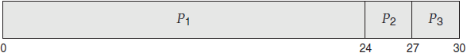
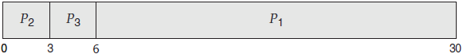
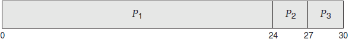
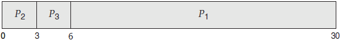

首页 > 编程笔记
先来先服务调度（FCFS）算法及优缺点
毫无疑问，最简单的 CPU 调度算法是先来先服务（FCFS）调度箅法。釆用这种方案，先请求 CPU 的进程首先分配到 CPU。
FCFS 策略可以通过 FIFO 队列容易地实现。当一个进程进入就绪队列时，它的 PCB 会被链接到队列尾部。当 CPU 空闲时，它会分配给位于队列头部的进程，并且这个运行进程从队列中移去。FCFS 调度代码编写简单并且理解容易。
FCFS 策略的缺点是，平均等待时间往往很长。假设有如下一组进程，它们在时间 0 到达，CPU 执行长度按 ms 计：
如果进程按 P1、P2、P3 的顺序到达，并且按 FCFS 顺序处理，那么得到如下 Gantt 图所示的结果（这种 Gantt 图为条形图，用于显示调度情况，包括每个进程的开始与结束时间）：

进程 P1 的等待时间为 0ms，进程 P2 的等待时间为 24ms，而进程 P3 的等待时间为 27ms。因此，平均等待时间为

现在平均等待时间为
另外，考虑动态情况下的 FCFS 调度性能。假设有一个 CPU 密集型进程和多个 I/O 密集型进程。随着进程在系统中运行，可能发生如下情况：CPU 密集型进程得到 CPU，并使用它。在这段时间内，所有其他进程会处理完它们的 I/O，并转移到就绪队列来等待 CPU。当这些进程在就绪队列中等待时，I/O 设备空闲。最终，CPU 密集型进程完成 CPU 执行并且移到 I/O 设备。所有 I/O 密集型进程，由于只有很短的 CPU 执行，故很快执行完并移回到 I/O 队列。这时，CPU 空闲。之后，CPU 密集型进程会移回到就绪队列并分配到 CPU。再次，所有 I/O 进程会在就绪队列中等待 CPU 密集型进程的完成。由于所有其他进程都等待一个大进程释放 CPU，故称之为护航效果。与让较短进程先进行相比，这会导致 CPU 和设备的使用率降低。
也要注意，FCFS 调度算法是非抢占的。一旦 CPU 分配给了一个进程，该进程就会使用 CPU 直到释放 CPU 为止，即程序终止或是请求 I/O。FCFS 算法对于分时系统（每个用户需要定时得到一定的 CPU 时间）是特别麻烦的。允许一个进程使用 CPU 过长将是个严重错误。
FCFS 策略可以通过 FIFO 队列容易地实现。当一个进程进入就绪队列时，它的 PCB 会被链接到队列尾部。当 CPU 空闲时，它会分配给位于队列头部的进程，并且这个运行进程从队列中移去。FCFS 调度代码编写简单并且理解容易。
FCFS 策略的缺点是，平均等待时间往往很长。假设有如下一组进程，它们在时间 0 到达，CPU 执行长度按 ms 计：
| 进程 | 执行时间 |
|---|---|
| P1 | 24 |
| P2 | 3 |
| P3 | 3 |
如果进程按 P1、P2、P3 的顺序到达，并且按 FCFS 顺序处理，那么得到如下 Gantt 图所示的结果（这种 Gantt 图为条形图，用于显示调度情况，包括每个进程的开始与结束时间）：

(0 + 24 + 27)/3 = 171ms。不过，如果进程按 P2、P3、P1 的顺序到达，那么结果如以下 Gantt 图所示：

(6 + 0+3)/3 = 3ms。这个减少是相当大的。因此，FCFS 策略的平均等待时间通常不是最小，而且如果进程的 CPU 执行时间变化很大，那么平均等待时间的变化也会很大。另外，考虑动态情况下的 FCFS 调度性能。假设有一个 CPU 密集型进程和多个 I/O 密集型进程。随着进程在系统中运行，可能发生如下情况：CPU 密集型进程得到 CPU，并使用它。在这段时间内，所有其他进程会处理完它们的 I/O，并转移到就绪队列来等待 CPU。当这些进程在就绪队列中等待时，I/O 设备空闲。最终，CPU 密集型进程完成 CPU 执行并且移到 I/O 设备。所有 I/O 密集型进程，由于只有很短的 CPU 执行，故很快执行完并移回到 I/O 队列。这时，CPU 空闲。之后，CPU 密集型进程会移回到就绪队列并分配到 CPU。再次，所有 I/O 进程会在就绪队列中等待 CPU 密集型进程的完成。由于所有其他进程都等待一个大进程释放 CPU，故称之为护航效果。与让较短进程先进行相比，这会导致 CPU 和设备的使用率降低。
也要注意，FCFS 调度算法是非抢占的。一旦 CPU 分配给了一个进程，该进程就会使用 CPU 直到释放 CPU 为止，即程序终止或是请求 I/O。FCFS 算法对于分时系统（每个用户需要定时得到一定的 CPU 时间）是特别麻烦的。允许一个进程使用 CPU 过长将是个严重错误。
关注公众号「站长严长生」，在手机上阅读所有教程，随时随地都能学习。内含一款搜索神器，免费下载全网书籍和视频。

微信扫码关注公众号